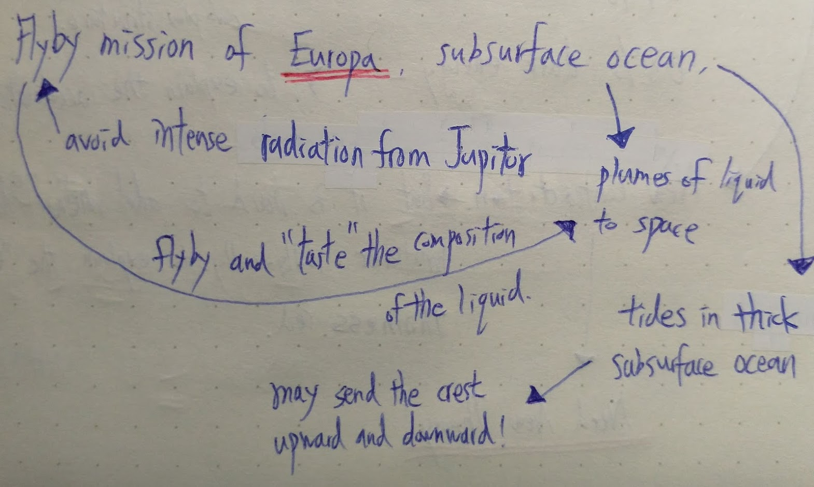

Europa Flyby Mission
Overview
Scientists believe that subsurface ocean exists on Europa. It might be an environment for life to emerge. By examining the ocean, ejected by the plumes into space, we can know the composition. A flyby mission is necessary to 'taste' the plume, because the traditional orbiting spacecraft is proned to damage by the strong radiation from Jupiter.
